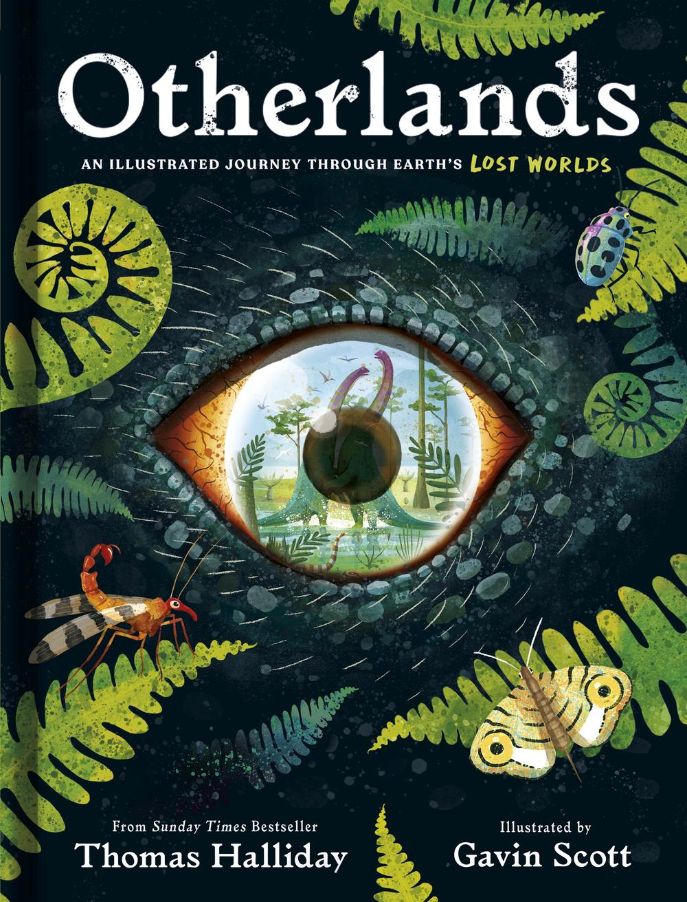

Author: Andy Weir Project Hail Mary follows Ryland Grace, a middle-school science teacher who wakes up alone on a spacecraft with no memory of who he is or why he is there. As fragments return, he learns Earth faces a crisis: a mysterious infrared "Petrova line" and a parasitic microbe draining stars of energy.
His ship—built at breakneck speed under a globally empowered director—was sent to the one nearby system that isn’t failing, in hopes of finding an answer
Author: Michael Crichton A thrilling science fiction novel that blends historical adventure with time travel. The story is set in both the present day and 14th-century France, featuring a group of historians who are transported back in time to the tumultuous period of the Hundred Years' War.
Through a mix of action, suspense, and thought-provoking concepts, "Timeline" offers an enthralling exploration of the possibilities and consequences of time travel.
Author: Thomas Halliday This book is an exploration of the Earth as it used to exist, the changes that have occurred during its history, and the ways that life has found to adapt―or not. It takes us from the savannahs of Pliocene Kenya to watch a python chase a group of australopithecines into an acacia tree; to a cliff overlooking the salt pans of the empty basin of what will be the Mediterranean Sea just as water from the Miocene Atlantic Ocean spills in; into the tropical forests of Eocene Antarctica; and under the shallow pools of Ediacaran Australia, where we glimpse the first microbial life

Project Hail Mary
Hard cover book jacket for Project Hail Mary.
Last updated 3 mins ago

Timeline
Paperback book cover art for Timeline.
Last updated 3 mins ago

Otherlands
Cover art for ilustrated edition of Otherlands
Last updated 3 mins ago